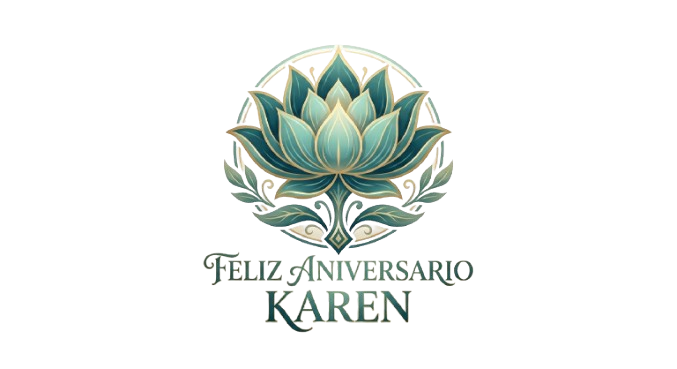

Buzón de Cartas Digitales Mi Amor
Haz clic en el sobre que necesites leer en este momento:
✉
Si me extrañas...
✉
Si tuviste un mal día...
✉
Si quieres sonreír...
✉

Para que pienses en mi amor ♪
Un pequeño rincón digital dedicado a nosotros y a todo lo que eres para mí.
Haz clic en el sobre que necesites leer en este momento: